Моя специализация - web разработка. Дизайн, верстка, программирование - мой конек. Основные характеристики моих результатов можно перечислить в следующих пунктах: технологичность, функциональность, адаптивность, стиль. В моем арсенале полный спектр услуг, среди которых следует упомянуть: java-script анимация, парсинг данных, выгрузки и синхронизация, смс-рассылки, управление мультимедиа, проектирование юзабилти и т.д.
На результаты своего труда даю гарантию и в случае каких-либо обнаруженных багов провожу бесплатное сервисное обслуживание.
Популярные Технологии:
Моя специализация -
web разработка. Дизайн, верстка, программирование - мой конек. Основные характеристики моих результатов можно перечислить в следующих пунктах:
технологичность, функциональность, адаптивность, стиль. В моем арсенале полный спектр услуг, среди которых следует упомянуть: java-script анимация, парсинг данных, выгрузки и синхронизация, смс-рассылки, управление мультимедиа, проектирование юзабилти и т.д.
На результаты своего труда даю гарантию и в случае каких-либо обнаруженных багов провожу
бесплатное сервисное обслуживание.
Популярные технологии:
Популярные Технологии:
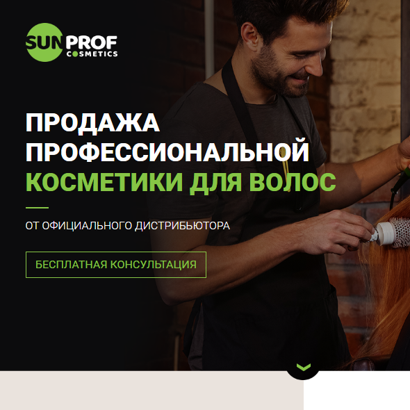
SUNPROF cosmetics - каталог продукции
Данный проект включал в себя посадочную страницу совмещенную с каталогом продукции. Дизайн, выполненный сторонним разработчиком был сверстан мной в адаптивном вариант, что естественно нашло одобрение со стороны заказчика. Дополнительным плюсом было использование 1C Bitrix для бэкенда, что позволило заказчику удобно управлять контентом, и иметь неплохую перспективу развития своего сайта.
Данный проект включал в себя посадочную страницу совмещенную с каталогом продукции. Дизайн, выполненный сторонним разработчиком был сверстан мной в адаптивном вариант, что естественно нашло одобрение со стороны заказчика. Дополнительным плюсом было использование 1C Bitrix для бэкенда, что позволило заказчику удобно управлять контентом, и иметь неплохую перспективу развития своего сайта.
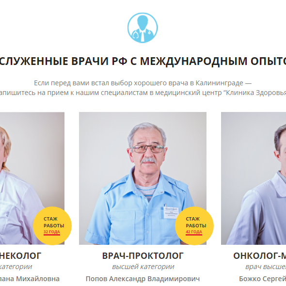
ХОРОШИЕ ВРАЧИ - интернет портал частной клиники
Портал для клиники частных докторов - требовал много внимания, как из-за количества и организации контента, так и из-за pixel-perfect требований заказчика. В результате получился полностью адаптивный, многофункциональный и информативный проект.
Портал для клиники частных докторов - требовал много внимания, как из-за количества и организации контента, так и из-за pixel-perfect требований заказчика. В результате получился полностью адаптивный, многофункциональный и информативный проект.
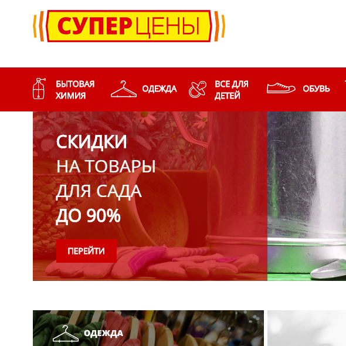
СУПЕР ЦЕНЫ - интернет магазин для оптовиков
Можно сказать что данный магазин является типичным представителем интернет-магазинов, но данная реализация отличается тем, что он предназначен для оптовиков. Как обычно в таких проектах бывает, во фронтенде, да и в бекенде был тщательно проработан разнообразный функционал, что позволило удобно пользоваться и управлять магазином.
Можно сказать что данный магазин является типичным представителем интернет-магазинов, но данная реализация отличается тем, что он предназначен для оптовиков. Как обычно в таких проектах бывает, во фронтенде, да и в бекенде был тщательно проработан разнообразный функционал, что позволило удобно пользоваться и управлять магазином.
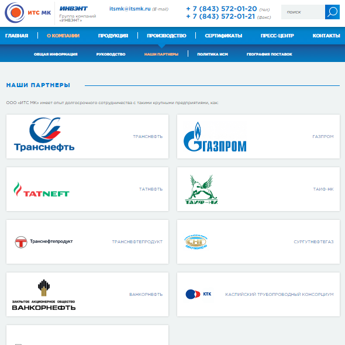
ИТС МК - портал крупного технологичного предприятия
В связи с обилием контента и особыми преференциями заказчика к его организации, мы пришли к довольно нестандартному решению в части бэкенда, что позволило обеспечить все требования на высоком уровне. Также не забыли про фронтенд и удобство пользователя, и конечно же добавили полный адаптив. В итоге - решения принятые в этом проекте ушли в другие подразделения компании, и мы продолжаем дальнейшее сотрудничество.
В связи с обилием контента и особыми преференциями заказчика к его организации, мы пришли к довольно нестандартному решению в части бэкенда, что позволило обеспечить все требования на высоком уровне. Также не забыли про фронтенд и удобство пользователя, и конечно же добавили полный адаптив. В итоге - решения принятые в этом проекте ушли в другие подразделения компании, и мы продолжаем дальнейшее сотрудничество.
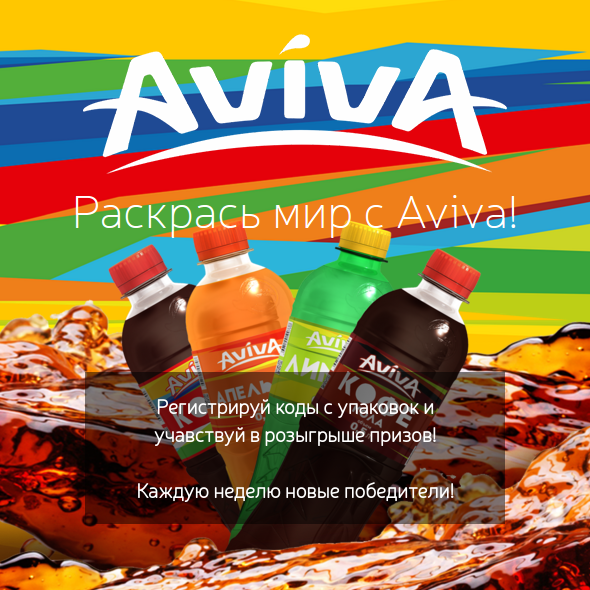
Система регистрации конкурсных кодов - AVIVA
В данном проекте, вся сложность состояла в том, что регистрация кодов, может проходить не только через портал, но и по СМС. В связке Битрикс + СМС гейт, получилось надежно и качественно выполнить все изначальные условия, а обогатив все адаптивной версткой с элементами анимации - полностью удовлетворить заказчика.
В данном проекте, вся сложность состояла в том, что регистрация кодов, может проходить не только через портал, но и по СМС. В связке Битрикс + СМС гейт, получилось надежно и качественно выполнить все изначальные условия, а обогатив все адаптивной версткой с элементами анимации - полностью удовлетворить заказчика.
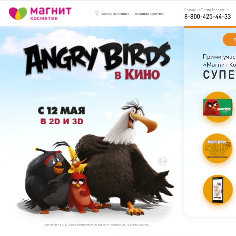
Конкурс детских картин: Angry Birds - Магнит косметик
В конкурсе от МАГНИТ Косметик основной загвоздкой являлась довольно хитрая форма заявки на участие, с многоуровневой валидацией и нестандартным (даже для html5) функционалом отправки файлов, однако с поставленными задачами получилось справится на ура, стандартно обогатив проект дополнительным, неоговоренным в ТЗ функционалом.
В конкурсе от МАГНИТ Косметик основной загвоздкой являлась довольно хитрая форма заявки на участие, с многоуровневой валидацией и нестандартным (даже для html5) функционалом отправки файлов, однако с поставленными задачами получилось справится на ура, стандартно обогатив проект дополнительным, неоговоренным в ТЗ функционалом.
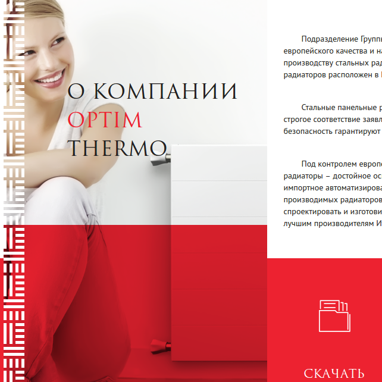
Каталог продукции компании OPTIM ТЕРМО
Вполне стандартный каталог продукции, который несмотря на это, я постарался представить в напрашивающейся само-сабой живой, подвижной и в тоже время адаптивной верстке.
Вполне стандартный каталог продукции, который несмотря на это, я постарался представить в напрашивающейся само-сабой живой, подвижной и в тоже время адаптивной верстке.
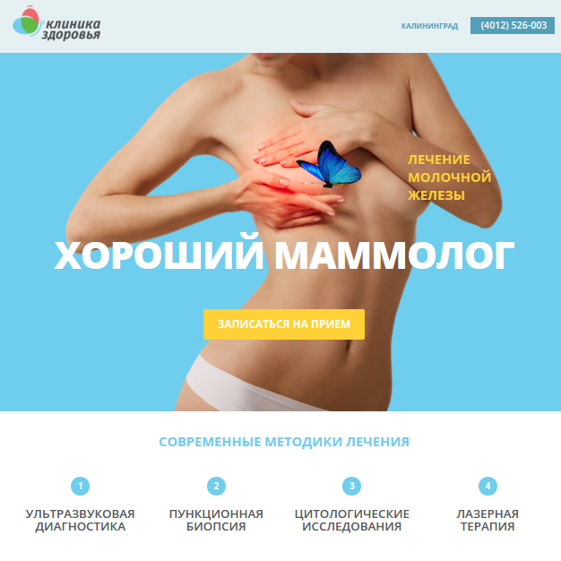
Landing page частной клиники - отделение мамологии
Чистый, свежий Landing Page при создании которого требовалось во первых pxiel-perfect соответсвовать макету, во вторых на ходу создавать адаптивную верстку под все разрешения экранов. После нескольких ревизий получилось добится желаемого эффекта, чем я с уверенностью порадовал клиента.
Чистый, свежий Landing Page при создании которого требовалось во первых pxiel-perfect соответсвовать макету, во вторых на ходу создавать адаптивную верстку под все разрешения экранов. После нескольких ревизий получилось добится желаемого эффекта, чем я с уверенностью порадовал клиента.
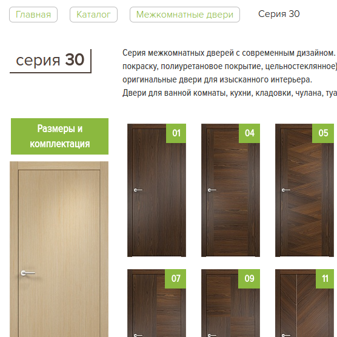
Портал компании по производству дверей ОПТИМ
На данном портале требовалось провести всеобъемлюющий рефакторинг. Изменения затронули практически все разделы и их список довольно внушительный. Прежде всего преследовалась цель сделать портал более userfriendly, а также расширить изначальный функционал. Со всеми поставленными задачами справился, также несколько моих решений нашло одобрение у заказчика и было успешно реализовано.
На данном портале требовалось провести всеобъемлюющий рефакторинг. Изменения затронули практически все разделы и их список довольно внушительный. Прежде всего преследовалась цель сделать портал более userfriendly, а также расширить изначальный функционал. Со всеми поставленными задачами справился, также несколько моих решений нашло одобрение у заказчика и было успешно реализовано.
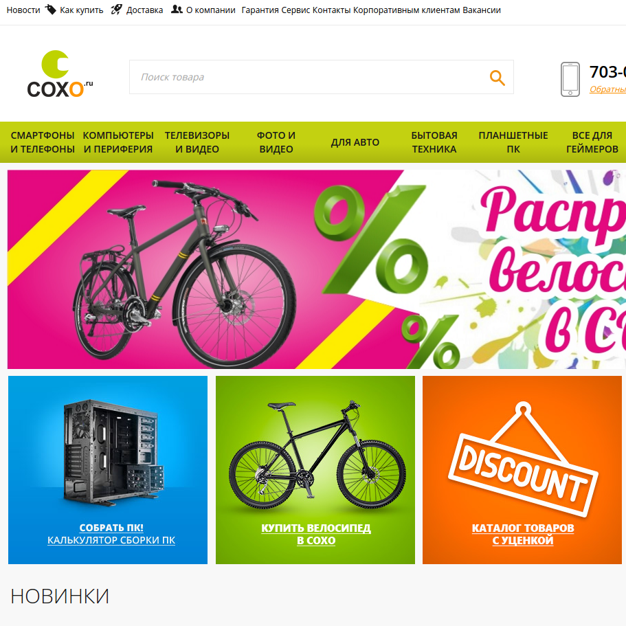
Интернет магазин компьютерного салона COXO
В данном случае мне надо было объеденить две версии сайта - десктопную и мобильную в один шаблон верстки - адаптивный bootstrap. Попутно получилось ввести ряд нового функционала, как по части пользовательского интерфейса, так и backend составляющей, включая импорт характеристик и изображений из Yandex маркет.
В данном случае мне надо было объеденить две версии сайта - десктопную и мобильную в один шаблон верстки - адаптивный bootstrap. Попутно получилось ввести ряд нового функционала, как по части пользовательского интерфейса, так и backend составляющей, включая импорт характеристик и изображений из Yandex маркет.
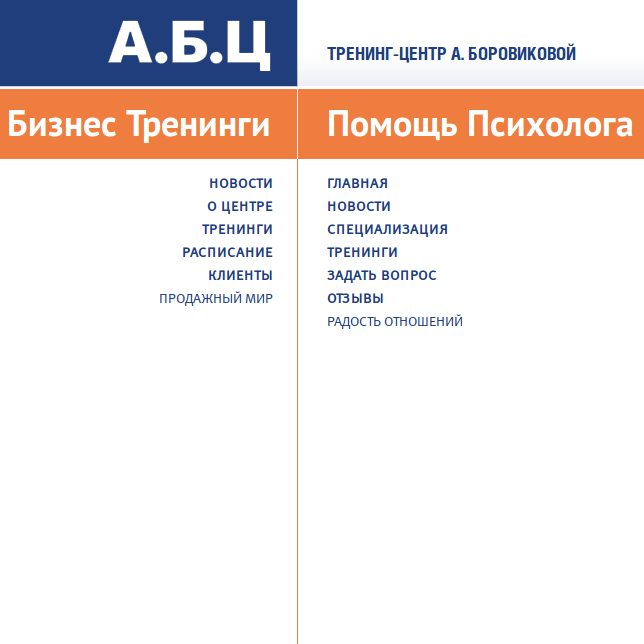
Двойной портал тренера-психолога А. Боровиковой
В случае этого портала надо было объеденить два разных старых сайта, в рамках одного нового портала. Для этого я разработал концепцию двойного сайта, с удобным управлением отображаемым контентом, после чего успешно реализовал ее, с применением java-script и ajax технологий.
В случае этого портала надо было объеденить два разных старых сайта, в рамках одного нового портала. Для этого я разработал концепцию двойного сайта, с удобным управлением отображаемым контентом, после чего успешно реализовал ее, с применением java-script и ajax технологий.
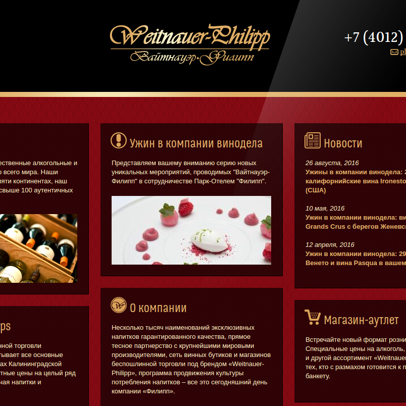
Портал винного бутика Weitnauer-Philipp
Для портала винного бутика требовалась свежая идея и безупречная реализация. Поэтому вместе с командой мы пришли к анимированно-блочной конструкции сайта, связаной между собой технологиями ajax и history api, для плавного восприятия и удобства использования.
Для портала винного бутика требовалась свежая идея и безупречная реализация. Поэтому вместе с командой мы пришли к анимированно-блочной конструкции сайта, связаной между собой технологиями ajax и history api, для плавного восприятия и удобства использования.
В основном все расценки
индивидуальные, так как любой проект состоит из совершенно разных как по времени так и по трудоемкости этапов разработки. Но все же определенные моменты можно
описать усредненной ценой, что я и делаю, таблица приблизительных расценок находится чуть ниже.
Добавлю что работаю по
одной из двух систем - первая это
по предоплате 30% от общей стоимости заказа, вторая -
с поэтапной оплатой, после каждого этапа разработки. Первый вариант использую в случае небольших заказов, второй для тех которые имеют большой объем работ.
В основном все расценки
индивидуальные, так как любой проект состоит из совершенно разных как по времени так и по трудоемкости этапов разработки. Но все же определенные моменты можно
описать усредненной ценой, что я и делаю, список расценок находится чуть ниже.
Добавлю что работаю по
одной из двух систем - первая это
по предоплате 30% от общей стоимости заказа, вторая -
с поэтапной оплатой, после каждого этапа разработки. Первый вариант использую в случае небольших заказов, второй для тех которые имеют большой объем работ.